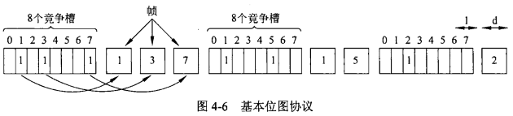
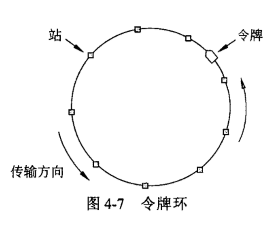
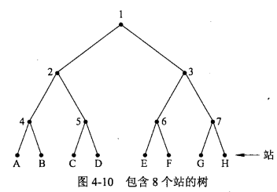
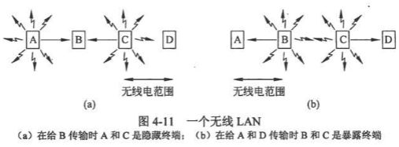
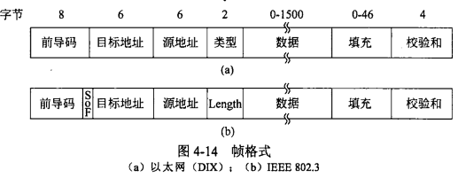
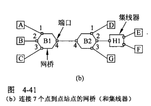
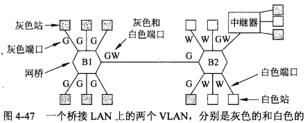

网络链路可以分为两大类：点到点连接和广播信道。广播信道也称为多路访问信道，其主要需要解决的关键问题是当多方竞争信道时如何确定谁拥有使用权，用来确定多路访问信道下一个使用者的协议称为 介质访问控制(MAC, Media Access Control Layer) 子层，其属于数据链路层的一个子层，技术上MAC子层位于数据链路层底部。在LAN中，MAC子层很重要，特别是在无线局域网中，因为无线本质上就是广播信道。
多路访问协议
ALOHA协议
ALOHA一种使用无线广播技术的分组交换计算机网络，实现一点到多点的数据通信。取名ALOHA，是夏威夷人表示致意的问候语，这项研究计划的目的是要解决夏威夷群岛之间的通信问题。协议分为纯ALOHA和分槽ALOHA，区别在于时间是连续的还是分成离散槽。
纯ALOHA
基本思想是：当用户有数据需要发送时就传输，发送方通过侦听信道检查是否发生看冲突，多个用户共享同一个信道就会产生竞争，假设两个发送方同时传输数据时就会发生冲突，两个冲突的帧都将被损坏，这两个发送方各自随机等待不同时间，然后再次发生帧。
不过对于这种任何人都可以随意发送的传输方式，在用户量很多的时候成功率基本为0，协议基本瘫痪。经测试，在不同用户量的情况下，最好的信道利用成功率为18%。
分槽ALOHA
策略是将时间分成离散的间隔，称为时间槽(slot)，每个时间槽对应于一帧。站不允许用户每次敲入回车键就立即发送帧，必须要等到一个时间槽的开始时刻。其最好的信道利用成功率是37%。
载波侦听协议(Carrier Sense Protocol)
站监听信道是否存在载波，即是否有传输，在发送帧前采取相应的动作。
1-坚持
当一个站要发送数据时，首先侦听信道，如果信道空闲就发送该帧，如果信道忙，该站等待直至信道变成空闲然后再发送帧。不过这个方案还是会发生冲突，当两个站在第三个站的发生过程中准备好了发生的帧，它们都会等待直到当前的传输结束，然后双方将确定同时开始传输，冲突发生了。如果发生冲突，站随机等待一段时间，然后再从头开始上述过程。
因为当站发现信道空闲时，它传输数据的概率为1，故称为1-坚持载波侦听。
非坚持
站发送数据前依然侦听信道，发现信道空闲就传输数据，如果发现信道正在传输中，则该站并不持续对信道进行监听，以便传输结束后立即抓住机会发送数据，相反它会取消监听然后随机等待一段时间重复上述算法。
因此该算法将会导致更好的信道利用率，但也会带来更大的延迟。
p-坚持
它适用于分时间槽的信道。站发送数据前侦听信道，发现信道空闲就按照概率p发送数据，以概率 q=1-p 将发送推迟到一下时间槽。这个过程一直重复下去，直到帧被发送出去，或者另一个站开始发送数据。
无冲突协议
假设共有N个站，每个站都有唯一的地址，地址范围从0到N-1。
位图协议(Bitmap)
采用了基本位图法，使用时间槽，称为竞争期。每个竞争期正好包含N个位置槽，如果0号站有一帧时间要发送，则它在第0个槽中传送1位，在这个槽中，不允许其他站发送。一般地，j号站通过在j号槽中插入1位来声明自己有帧要发送，当所有N个槽都经过后，每个站都知道了哪些站希望传送数据，这时候它们便按照数字顺序开始传送数据了。

由于每个站都同意下一个是谁传输，所以永远也不会发生冲突，当最后一个就绪站传送完它的帧后，于是另一个N位竞争期又开始了。
如果一个站在它对应的位槽刚刚经过就准备好了要发送的数据，那它就非常不幸，只能保持沉默；直到每个站都获得了发送数据的机会，新的位图再次到来，它才能通过位槽表明自己有传输的意愿。
当某个站要发送数据时，当前槽处于位图中间的某个地方，平均对于低序号站来说，如0号站必须等待完成当前扫描的N/2个槽，再等待完成下一次扫描的另外N个槽，然后才能开始传输数据；对于高序号站，只需等待当面半个扫描周期N/2位槽，就可以传输数据了，不必等待到下一次扫描。由于低序号的站必须等待平均1.5N个槽，而高序号的站必须等待平均0.5N个槽，因此对所有站而言，要平均等待N个槽。
令牌传递(Token)
类似位图的实质让每个站以预定义的顺序轮流发送一帧，该方案通过传递一个称为 令牌 的短消息，该令牌以 令牌环(Token Ring) 的顺序从一个站传到下一个站。令牌代表了发送权限，如果站有等待传输的帧数据，当它接受到令牌就可以发送帧，然后再把令牌传递到下一站，如果它没有排队的帧要传，则它只是简单地把令牌传递下去。

令牌和位图的细微差别在于，在周期中所有的位置是均等的，它们的等待发送数据的时间是一样的，所以不存在偏向低编号或者高编号的情况。
二进制倒计数(Binary Countdown)
令牌和位图每个站的开销是1位，所以该协议不可能很好的扩展到含有上千个站的网络中。而该方案基本思路是：如果一个站想要使用信道，它就以二进制位串的形式从高序号位开始广播自己的地址，假设所有地址都有同样的长度，不同站在发送数据的同时，地址中相同位进行布尔或(OR)运算，一个站只要看到自己的对应地址位中的0值位置被改写成了1，则它必须放弃竞争。
举例：如果站0010、0100、1001和1010
都要试图发送数据获取信道，从高位第4位开始OR得到1，站0010和0100看到了1，立即明白比它们高序号的站也在竞争信道，所以它们放弃这一轮的竞争，而站1001和1010则继续竞争信道，接下来第3位OR得到0，于是两者继续竞争，第2位OR得到1，所以站1001放弃，站1010获得了竞争，它现在可以传输一帧，之后又开始新一轮的竞争。
高序站的优先级比低序站的优先级高，这可能是好事也可能是坏事，取决于上下文。
有限竞争协议(Limited-Contention Protocol)
有两个重要性能指标来衡量有竞争协议和无竞争协议：低负载下的延迟，以及高负载下的信道利用率。在负载较轻的情况下，竞争方法(ALOHA协议)更为理想，因为它的延迟较短(冲突很少发生)，无竞争方法有相对高的延迟；随着负载的增加，竞争方法对信道仲裁所需要的开销变得越来越大，而无竞争方法的信道效率反而得到提高。
把竞争协议和无冲突协议的优势结合起来，这样得到的新协议在低负载下采用竞争的做法而提供较短的延迟，在高负载下采用无冲突技术从而获得良好的信道效率，就称为有限竞争协议。首先将所有的站划分成组，只有0号组的成员才允许竞争0号时间槽，如果该组中一个成员竞争成功了，则它获得信道马上传送它的帧，该次竞争期结束准备开始下一个竞争期；如果该时间槽是空闲的或者发生了冲突，则1号组的成员开始竞争1号时间槽，以此类推。这里需要的是一种动态地将站分配到时间槽的方法，当负载很低时，每个时间槽中的站点数量就多一些；当负载很高时，每个时间槽中的站点数量就少一点，甚至只有一个站。
自适应树遍历协议

该算法把站看作是二叉树的叶节点，该树所有的站允许获取信道。假设这8个站竞争的是0号槽，如果它们中的某一个获得了信道，则很好；如果发生了冲突，约定位置2号节点下的站才可以参与竞争1号槽，并且A-D站中一个获得信道发送了一帧，那1号槽就会保留给节点3下的E-H站；如果节点2下多个站都要传输数据也发生了冲突，那下一个槽即2号槽就由位于节点4下面的站来竞争；如果节点2下面的站在竞争1号槽时，发现它是空闲的，那说明冲突一定发生在节点3下，此时探测节点3毫无意义，可以跳过去直接探测节点6，当这次探测结果仍然是空时，节点7可以跳过去，尝试节点G。
无线局域网协议
每个无线电发射器有固定的传播范围，用一个圆形覆盖区域表示。
一个简单地想法是像之前的方案使用侦听机制：每个站侦听是否有其他站在传输，只有当没有站在传送数据时它才传输。但是因为无线的范围是有限的，这个方案会产生隐藏终端和暴露终端两个问题。举例：有A、B、C、D 四个无线站，带有多个发射图标的是发射站，其覆盖的范围是相邻的站。

隐藏终端问题(Hidden Station Problem)：如图a，A和C同时向B传输数据，如果A开始发送，然后C立即进行侦听，因为A在它的覆盖范围之外，它并不会听到A的传输，因此C错误地得出结论，它可以向B传输数据，结果就会在B出发送冲突，从而扰乱A发来的帧。 暴露终端问题(Exposed Station Problem)：如图b，B向A传输数据同时C想给D传输数据，如果C侦听介质，它会听到A的信道有数据在传输(并不知道具体传输双方对象)，从而错误地得出结论，它不能向D发送数据。
能处理无线LAN这些问题的一个有影响力的协议是 冲突避免多路访问(MACA, Multiple Access With Collosion Avoidance)。基本思想是：发送方给接收方一个RTS(Request To Send)帧，这个短帧包含了数据的长度，然后接收方用一个CTS(Clear To Send)作为应答，其他站只要侦听到其中一个帧，就必须保持沉默并等待随机时间。
MACA方案依旧解决不了暴露终端问题，能解决隐藏终端问题，不过A和C同时向B发送RTS帧时也会发生冲突，不成功的发送方将等待一点随机时候后重试。
以上所有协议中谈到等待随机时间，一般使用的是 二进制指数后退 策略。基本思想是：一般在第i次冲突之后从0~2^i-1之间随机选择一个数，然后等待这么多个时间槽。比如第一次冲突发生后，每个站随机等待0个或1个时间槽，之后在重试发送；在第二次冲突后每个站随机选择0、1、2或3，然后等待这么多个时间槽；如果第三次冲突又发生了(发生的概率为0.25)，则下一次等待的时间槽从0到2^3-1之间随机选择，以此类推。最后到达10次冲突后，随机数的选择区间被固定在最大值1023，以后不再增加。在16次冲突之后，控制器放弃努力，并给计算机返回一个失败报告，进一步的恢复工作由高层协议完成。
MAC子层帧格式

首先是8个字节的 前导码(Preamle)，每个字节包含比特模式10101010，除了最后一个字节的最后2位是11，这最后一个字节称为802.3的帧起始定界符(Start of Frame, SOF)；
接下来是目标地址和源地址两个 MAC地址 字段，在Windows系统的dos窗口输入ipconfig -all可以很方便的查看本机的MAC地址，比如我的是50-7B-9D-82-B5-C0，它由12个十六进制数两两连在一起表示的，一共是6字节48位长。MAC地址具有全球唯一性，故也称为物理地址。前3个字段值由IEEE统一分配，指明网卡制造商，比如我的网卡根据50-7B-9D可查询到是LCFC联宝公司生产的，后3个字段由制造商自行分配来管理自己的产品流水号，并在设备出厂之前把完整的地址用程序编入网卡中。
接下来是以太网帧的 类型(Type) 字段或802.3的 长度(Length) 字段。以太网类型字段标识使用了哪种网络层协议，这样接收方的操作系统就知道把帧交给哪个进程去处理该数据包，例如值为0x0800的类型代码意味着帧内包含一个IPv4的数据包；802.3长度字段为了兼容性，规定任何值小于或等于0x600(1536)可解释为长度字段，任何大于0x600可解释为类型字段。
接下里是数据(Data)字段，最短为46字节，最长为1500字节。以太网有效帧从目标地址算起直到校验和(除数据和填充)称为标头一共固定是18字节，故有效帧最短为64字节，最长为1518字节。如果帧的数据部分少于46个字节，则使用填充(Pad)字段来填充该帧，使其达到最小长度要求。
最后一个字段是校验和(Checksum)，如32位的CRC差错检测码。
使用MAC地址在子网内实现通信
MAC主要解决的就是在一个子网内实现点到点的传输，所有今天遇到的拓扑结构都是多个主机电脑分别和交换机(网桥)连接组成的，交换机根据目的MAC地址将帧从一个接口转发到另一个接口。
传统的以太网中，在任意一个时刻网络中只能有一个站点发送数据，其他站点只可以接收信息，若想发送数据，只能退避等待。因此，共享式以太网的固定带宽被网络上所有站点共享，随机占用，网络中的站点越多，每个站点平均可以使用的带宽就越窄，网络的响应速度就越慢。交换机的出现解决了这个问题。在交换式局域网中，采用了交换机设备，只要发送数据的源节点和目的节点不冲突，那么数据发送就完全并行，这样大大提高了数据传送的速率。

执行准确转发的简单方法是每个交换机配备一个大的哈希表(Hash Table)，该表列出每个可能的目的地址及它隶属的输出端口。例如交换机B1上的表将列出主机D属于端口4，这样只要有一个主机通过B1转发帧给主机D，B1只需把帧从端口4发出去就行，至于怎么走后续路径已经不是B1所关心的事情了。
当交换机被第一次接入网络是，所有的哈希表都是空的，这时交换机使用 广播(Broadcast) 策略：对于每个发现未知目标地址的帧，交换机将它转发到所有的端口(输入端口除外)。这时通过ARP协议(Address Resolution Protocol, 地址解析协议)，所有的主机取出数据包中的IP地址与自身的IP地址比较，如果相同做出回复向交换机报告自己的MAC地址，否则丢弃这个包；另外交换机本身会使用后向学习法，比如B1看到端口3上的一帧来自站C，那么它就知道通过端口3一定能到达C，因此它就在哈希表中构造一项，以后所有抵达B1要去C的帧都将被转发到端口3。这样一旦知道了一个目标地址，以后发给该地址的帧只被放到正确地端口，而不再广播到所有端口。
当打开、关闭或移动主机和交换时，网络的拓扑结构就会发生变化，为了解决这个问题，在构造哈希表时帧的到达时间也被记录更新在相应的表中，该时间值反映了交换机最后看到该机器发出一帧的时间。交换机中有一个进程会定时扫描哈希表，将时间值在几分钟前的表项都清除掉，这样如果一台计算机从LAN上拔下来、移动或几分钟内部发送任何数据，那么任何发送给它的流量又将会被广播。
一般情况下，查找和更新哈希表中的表项只需几微妙即可完成。交换机在转发中继帧时，可以重写MAC层的标头，这样可以搭建虚拟局域网。

理论上单单依靠MAC地址，上海的网卡就可以找到洛杉矶的网卡了，技术上是可以实现的。但是，这样做有一个重大的缺点。以太网采用广播方式发送数据包，所有成员人手一”包”，不仅效率低，而且局限在发送者所在的子网络。也就是说，如果两台计算机不在同一个子网络，广播是传不过去的。这种设计是合理的，否则互联网上每一台计算机都会收到所有包，那会引起灾难。互联网是无数子网络共同组成的一个巨型网络，很像想象上海和洛杉矶的电脑会在同一个子网络，这几乎是不可能的。故MAC地址执行桥接功能，控制功能弱，没有路由选择功能。
解决主机A通过其所在的子网如何正确找到主机B所在子网，是通过IP地址转发数据，具有路由功能。理论上单单依靠IP地址也能实现上海的计算机可以找到洛杉矶的目标计算机，不过根据MAC地址转发数据，交换速度快，通过IP地址交换延迟高。从传输延迟的量级来看，如果MAC地址交换为几十微秒，则IP地址交换为几千微秒。
IP地址解决的是往哪走的问题，MAC地址解决的是怎么走的问题。两种地址之间没有任何联系，MAC地址是绑定在网卡上的，IP地址则是网管分配的，它们只是随机组合在一起。不过在整个互联网协议中相辅相成，完成源机器找到目标机器传输数据包。
虚拟局域网(VLAN, Virtual LAN)
在实际生活中，物理拓扑结构搭建的局域网往往不能满足所有的需求，对于结构组织总是在不停地变化的公司来说，用软件方式分离成几个逻辑拓扑结构的方案是很有必要的。网管首先要确定共有多少个VLAN、哪些计算机位于哪个VLAN、每个VLAN叫什么名称。通常VLAN用颜色来命名。

刚开始交换机的配置表时空的，灰色主机发送的数据帧只会被广播给标记为G的主机。比如交换机B2到交换机B1的端口没有被标记W，意味着白色主机上帧不会从B2转发到B1，因为实际上也没有白色VLAN上的机器被连接到B1。
总结
MAC层作为数据链路层的一个子层，采用广播的方式传输数据帧，主要任务是：有效解决多个数据帧同时竞争信道的冲突问题，最大化的提高信道利用成功率和减少延迟；在子网内根据MAC地址将帧从一个主机转发到另一个主机。